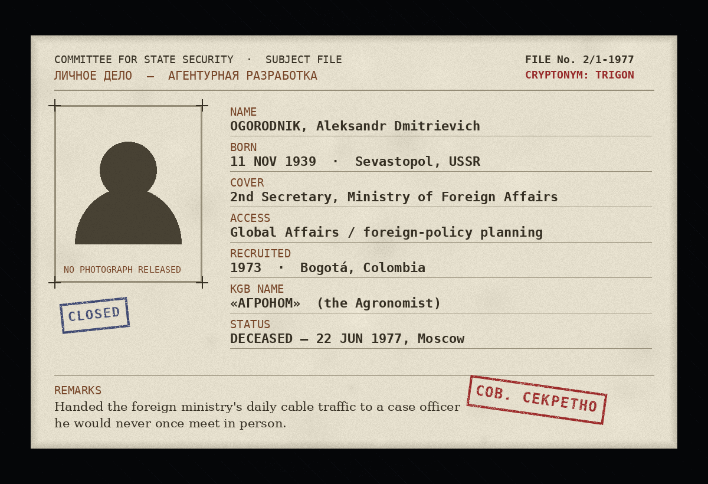
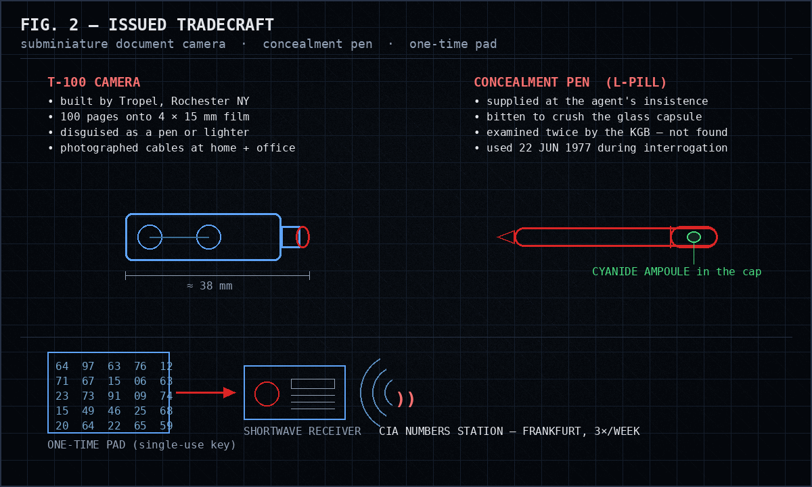
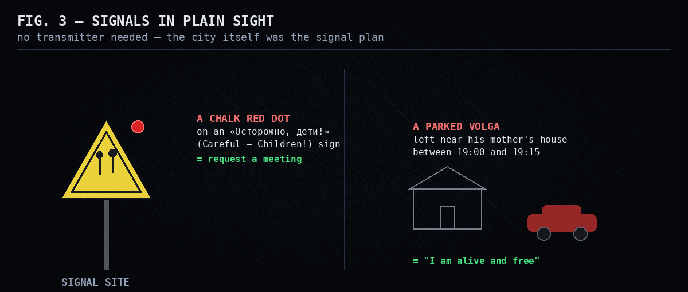
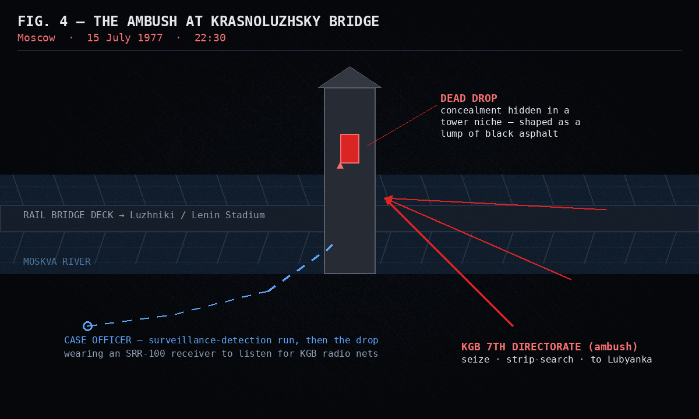
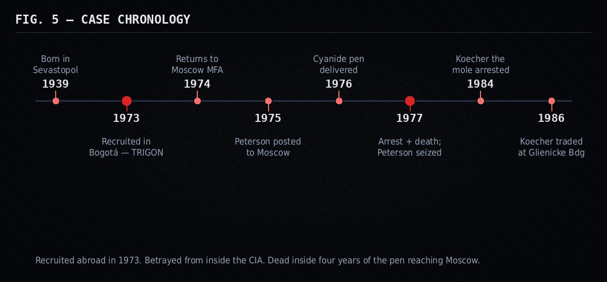

Savvy Security LLC
Codename TRIGON
The Soviet diplomat who mailed the Kremlin's secrets to Washington — and the fountain pen that killed him.
He photographed the Soviet foreign ministry's daily cable traffic and handed it to a case officer he never once met. The CIA's encryption was never broken. A trusted translator with read access to everything did the damage. And in the end, the agent reached for his own pen.
At around two in the morning on 22 June 1977, in an interrogation room in Moscow, a man asked for his pen.
He had been under arrest for a few hours. He had denied everything, then changed his mind and offered to write a full confession. An investigator slid paper across the table. The prisoner asked to use his own fountain pen — a nice one, the kind a senior diplomat carries. The KGB had already examined that pen. Twice. They had found nothing.
He started to write. Then he asked to see one of the exhibits again — a Chinese flashlight battery the searchers had cracked open to reveal a strip of film hidden inside. While one investigator went to fetch it and the other glanced away, he worked the pen between his hands, and put it in his mouth, and bit down.
By four o'clock he was dead at the Sklifosovsky emergency institute, the capillaries in his body destroyed by cyanide. Two of the doctors who worked on him fell ill. His heart, perfectly healthy, kept beating for two hours after the poison reached it.
His name was Aleksandr Dmitrievich Ogorodnik. To the CIA he was TRIGON — one of the most valuable agents the Agency ran behind the Iron Curtain. To the KGB counterintelligence officers who had spent a year building a net around him, he was «Агроном» — "the Agronomist."
This is his story, and it's a different animal from the usual Cold War spy legend. There's no defection, no cinematic exfiltration, no villain breaking the codes. The tradecraft was beautiful. The encryption was unbreakable and was never broken. TRIGON was given away by a man sitting inside the CIA's own Soviet division, holding a translator's badge — and that, for anyone who works in security, is the whole point.

First, three things nearly everyone gets wrong
Myth 1: "TRIGON was a KGB officer who turned."
No. Ogorodnik was a diplomat — a second secretary in the Soviet Ministry of Foreign Affairs. That distinction is the entire value proposition. He didn't hand over the identities of spies; he handed over the cables. The raw, daily, candid reporting that Soviet ambassadors sent home and that the foreign ministry's planning staff chewed on — what Moscow actually intended, in its own words, before the propaganda dried. The CIA's own account says his product reached the President. Some of those cables were being read at the White House within a day of being read in the Kremlin.
Myth 2: "Aldrich Ames betrayed him."
This one is everywhere, and it's worth killing carefully, because it's the kind of plausible-sounding error that spreads. Ames is the CIA officer who became a KGB mole and got a generation of American assets killed. Several accounts put a young Ames somewhere near the TRIGON case early in his career — handling communications at headquarters, or involved in the suicide-pen episode. Those accounts conflict, and I'd treat the specifics as unsettled.
But here's what isn't unsettled: Aldrich Ames did not sell out to the KGB until 1985. TRIGON was dead in June 1977. You cannot betray in 1985 a man who died in 1977. Whatever Ames did or didn't touch on the case, he is not how TRIGON was caught.
Myth 3: "He was blackmailed into it, so it doesn't really count."
Here the sources genuinely split, and I'll give you both, because the split itself is interesting.
- The KGB's telling is a honey trap. In Bogotá, Colombia, where Ogorodnik was posted in the early 1970s, Western intelligence steered a woman named Pilar Suárez Barcala into his path, and the compromising photographs became the lever. His own personnel file, in this version, already flagged the weaknesses: affairs, a little quiet profiteering, and ambition that outran his rank.
- The American telling — and his daughter's — is conviction. He enjoyed the West, he despised the system he served, and once he started he refused to stop even when stopping was the safe move. He asked for a suicide pill not because he was coerced but because he intended to go down on his own terms.
Both can be true. People are recruited through a weakness and then keep going for a reason. What's not in dispute is that once he was back inside Moscow, nobody was holding a photograph over him. He did it for years, under the nose of the most capable counterintelligence service on earth, for his own reasons.
Sevastopol, 1939
Ogorodnik was born on 11 November 1939 in Sevastopol, the Black Sea naval city. He trained as a naval officer, took a doctorate in economics, and moved into the diplomatic service — the kind of polished, upwardly mobile Soviet professional who gets sent abroad because he's trusted. By the early 1970s that meant the embassy in Bogotá.
He was good at the work and he liked the life. Colombia was warm, open, and a long way from Moscow's grey ceilings. Somewhere in that posting — sources date the recruitment to 1973, a few to early 1974 — the CIA took him on and gave him the cryptonym TRIGON.
And here is the human thread that almost no English-language account mentions. In Madrid, on 6 March 1975, Pilar Suárez Barcala gave birth to a daughter, Alejandra. Ogorodnik's daughter. He would be dead in two years, and by most accounts he never knew she existed. We'll come back to her at the end, because what she did decades later closes a circle that the spy agencies never could.
The homecoming
In the autumn of 1974 TRIGON was recalled to Moscow and placed in the foreign ministry's global-affairs and foreign-policy planning track. For an intelligence service this is the dream posting and the nightmare posting at once. The dream: he now sat on top of classified cable traffic flowing to and from Soviet embassies worldwide. The nightmare: he was back inside the USSR, where every returning diplomat is quietly screened, where the surveillance is total, and where a case officer cannot simply meet an agent for coffee.
So for the first stretch after his return, TRIGON went quiet — which was correct. A returning diplomat who immediately starts behaving like a spy is a returning diplomat who gets caught. In February 1975 he gave a prearranged "sign of life." By that autumn, the monthly rhythm of impersonal contact had begun. The entire operation would run, from first cable to final arrest, without TRIGON and his Moscow handler ever once being in the same room.
The camera
Before he flew home, the CIA trained him on the tool that made the whole thing possible: a subminiature document camera built by the Tropel optics shop in Rochester, New York, designated the T-100.

Think about what the T-100 actually bought. It let a man sit at his own desk — at home, and reportedly at the office — and quietly copy a hundred pages of classified cable onto a sliver of film he could hide in a hollowed-out battery. No bulky camera. No darkroom. No document ever left the building the normal way. This is exfiltration tradecraft of the highest order, and it is worth sitting with, because the modern version of this problem — a trusted insider copying everything they can see onto something tiny — is the exact threat every data-loss-prevention program on earth is still losing sleep over.
Signals in plain sight
The communications plan is my favorite part, because it used almost no technology at all. It used the city.

To ask for a meeting, he would chalk a red dot on a yellow "Careful — Children!" traffic sign. To signal he was safe, he would park his car near his mother's house in a tight evening window. His handlers, for their part, broadcast instructions from a CIA radio station near Frankfurt on a set schedule, three times a week, as a stream of numbers he decoded against a one-time pad. And at the dead drops themselves, a small folded note in Russian discouraged any ordinary citizen who stumbled on the package — roughly, comrade, this is a secret that is not your business — from poking further.
Covert channels. Steganography in the literal landscape. A pre-shared key system with perfect forward secrecy baked in by design. The hacker reading this already recognizes every one of these primitives; TRIGON was running them in meatspace in 1976, against the KGB, and they worked.
The first woman in Moscow
His handler was Martha "Marti" Peterson, and the CIA chose her for a reason that tells you something ugly about the era — and that turned out to be an operational advantage. Peterson, a young widow whose first husband had been killed on a CIA assignment in Laos in 1972, joined the Agency in 1973, learned Russian, and arrived in Moscow in the summer of 1975. She was, by the Agency's own account, among the first female case officers ever posted there.
The KGB, the CIA believed, simply did not take the idea of a woman intelligence officer seriously. So where every male officer at the embassy was tailed relentlessly, Peterson — cover job: a junior consular clerk who liked hiking and cross-country skiing — moved through Moscow for roughly eighteen months without drawing a surveillance team. She serviced the dead drops. She collected his film and left him fresh film, money, pads, and instructions. She wore an SRR-100 body receiver tuned to the KGB's own surveillance radio nets, so she could hear them coming.
The CIA has a phrase for what she and TRIGON were to each other across those two years. They were, it says, only "spies passing in the night." They never met. She knew his product and his schedule and the shape of his risk, and she never once saw his face.
The pen
Early on, TRIGON asked his handlers for an L-pill — a lethal dose of cyanide he could carry. He wanted the choice.
At Langley this set off a genuine argument. Supplying an agent with a suicide device is not a small thing, morally or legally, and officers on both the station and headquarters sides initially recoiled. The debate resolved into a grim conclusion: a man taking this much risk, at his own insistence, had earned the right to decide his own ending. The agency concluded it was, in effect, an obligation to him. The capsule was concealed inside a fountain pen and delivered to Moscow by dead drop — one package, among the ordinary logs and bricks and hollowed-out rocks, left in a quiet park.
Remember the pen. It comes back.
1977: the thread the KGB pulled
Good operations rarely end with a bang. They end with a slow accumulation of small wrongnesses, and TRIGON's ending started with the photographs getting worse.
In early 1977 the station noticed it: the quality of TRIGON's film was dropping, and his reporting felt off. To an experienced desk, degrading product plus erratic behavior reads one way — the agent may be under control, feeding material while the other side watches. The warning signs were there. The machine kept running anyway.
Behind the Moscow curtain, the KGB had been working a lead for a while. The decisive one, by the account most Western researchers accept, came from a mole inside the CIA itself: Karl (Karel) Koecher, a Czechoslovak intelligence officer who had posed as a defector, become a naturalized American, and taken a translator-and-contractor job inside the CIA's Soviet division in 1973. Koecher had translated the phone taps from TRIGON's Bogotá days. He didn't break a cipher. He didn't crack a dead drop. He simply read, as part of his job, the material that pointed at a compromised Soviet diplomat — and passed it east.
Once the KGB had the thread, TRIGON's own habits finished the job. He kept returning to the same park, leaving his car on the route Western diplomats were known to use. Counterintelligence concluded he was servicing a drop. Watchers on his apartment caught traces of secret writing. They located a CIA instruction cache. And — the detail that should make every security professional wince — when they finally searched his flat they found that he had not destroyed the used pages of his one-time pad, nor the CIA instructions that explicitly told him to destroy them. Spent key material and operational orders, retained. The unbreakable system, undone by key hygiene.
The arrest
On the evening of 21 June 1977, outside Building 2/1 on the Krasnopresnenskaya Embankment, the net closed. The officer running the approach, Colonel Igor Peretrukhin, had spent much of the previous year cultivating Ogorodnik under a cover story — posing as a friendly KGB contact, earning his trust, getting close enough to be standing in the courtyard when it mattered. Ogorodnik parked, opened his trunk, gathered a stack of files, and climbed toward his apartment with the officers alongside him. His key stuck in the lock. "Someone's been here," he said. He was right.
He was outwardly composed. His legs shook so hard he had to hold them still with his hands. He tore a scab on one hand and asked for a bandage; they refused him, because a bandage can hide poison. At one point, quietly, he asked the question that cuts through all the tradecraft to the thing underneath:
"Will they shoot me?"
Then he offered his confession, and asked for his pen.
The death
You already know this part. The pen had been checked twice and cleared. He wrote a few words, created a moment of distraction, and bit through the barrel. The scene that followed was frantic and futile — a metal ruler to pry the jaw, a search for an ampoule that produced nothing, convulsions, bloody foam, an ambulance, the emergency institute, and death at four in the morning on 22 June 1977.
The CIA Museum, which holds a companion to that pen, describes the end in six plain words: he bit down, and died instantly. The reality took a little longer and was a great deal worse. But the choice was his, which is the thing he had bought with the pill in the first place.
There is a quieter record of who he was, too. A KGB account cites his own diary, where he wrote — this is a man describing himself — that he would not "die decrepit in my bed." He got that much. A planned marriage into a senior Party family, an ambition to climb, a daughter in Madrid he never met, and a diary entry about not dying old. Make of the man what you will.
15 July 1977: the ambush at the bridge
TRIGON missed a scheduled dead-drop contact in late June, and contact ceased. The Moscow station did not yet know he was dead. So they planned the next drop.

Peterson had a bad feeling about this one and said so; she suggested another officer take the drop. The station's new chief sent her anyway, with backup trailing. She made her route, reached the stone tower on the bridge over the Moskva River, and placed the package in the niche — a package that, unknown to her, now contained fresh film, fresh pads, money, and valuables intended for a man who had been dead for three weeks.
As she left the tower, three men seized her. A vehicle disgorged many more. They strip-searched her on the spot, found the SRR-100 receiver against her body, photographed everything, and drove her to Lubyanka. She was interrogated, confronted with her own equipment laid out on a table, and — because she held diplomatic status — released and flown out of the Soviet Union the next day, declared persona non grata.
When her cable reached the station board, the chief's welcome-home message read:
"Welcome back, our little girl!"
The same chief then spent years blaming her for the arrest — for supposedly dragging surveillance to the site — an accusation that followed her unfairly for the better part of a decade before the real story, the mole inside the CIA, came clear. The first woman the Agency sent to run an agent in Moscow ran one of its best, got caught only because someone else sold the operation, and got blamed for it anyway.
The long tail
The Soviets sat on the story for nearly a year, then publicized it in 1978, painting Peterson as a poisoner who had smuggled death to a Soviet citizen — a charge their own files did not support. Karl Koecher, the translator who had quietly started the collapse, was not arrested until November 1984. In February 1986 he walked west across the Glienicke Bridge — the famous "Bridge of Spies" — in the same exchange that freed the dissident Natan Sharansky. The man who gave up TRIGON strolled out of the story a free man.
Peterson retired from the CIA in 2003 after three decades of service and later wrote it all down in The Widow Spy.
The daughter he never knew
Here is the ending the agencies didn't write.
Alejandra Suárez Barcala grew up in Spain not knowing who her father really was. Her mother, Pilar, kept the secret for most of her life. And here is the small, devastating detail: the Americans told the family only that Ogorodnik had been arrested — not that he was dead. So for a time after June 1977, by her daughter's account, Pilar went on writing letters to a man who no longer existed.
Decades later, Alejandra pieced the truth together and wrote a book about it, recovering her father's own unpublished memoirs from her mother's belongings. The person who helped her reconstruct what happened in Moscow, and who wrote the prologue, was Marti Peterson — the case officer who had handled TRIGON for two years and never once met him. Two women, one on each end of the operation, closing the circle the spy services left open.
What a security engineer takes from TRIGON
I run a research shop. I read these stories the way I read incident reports, because that's what they are. Here is what the TRIGON file actually teaches, stripped of the romance.
- The crypto was never the weak point. One-time pads, used correctly, are unbreakable — and nobody broke them. The compromise came through a human with legitimate read access. In 2026 the headline is quantum computers and "harvest now, decrypt later." TRIGON is the reminder that your adversary would usually rather recruit the translator than attack the cipher. Key strength is not your attack surface. The people with access are.
- The insider threat wears a badge you issued. Koecher didn't break in. He was hired, cleared, and handed exactly the material that mattered. He was the trusted third party in the supply chain — the contractor with access to everything and scrutiny proportional to nothing. Every modern breach that starts with a vendor, a translator, a managed-service provider, or a "trusted" integration is this same story.
- Key hygiene is the whole ballgame. The single most damning thing in the Moscow file isn't the surveillance. It's that TRIGON kept spent one-time-pad pages and the instructions telling him to destroy them. Perfect cryptography plus sloppy key handling equals compromise. Rotate, destroy, and never, ever retain the material that is supposed to be ephemeral.
- Behavioral patterns are a signature. He died, operationally, from predictability — the same park, the same route, the same timing. Modern defenders call this behavioral analytics and anomaly detection. The KGB called it watching a man do the same odd thing in the same place until it meant something.
- Covert channels don't need bandwidth. A chalk mark on a road sign. A car parked for fifteen minutes. These carried real signal with zero interceptable traffic. If you're only watching the wire, you're not watching the channel.
- The exfil device keeps shrinking. The T-100 put a hundred documents on a sliver of film in a pen. The threat never changed; the form factor did. It's a USB stick now, or a personal cloud sync, or a phone camera pointed at a screen. Same operation.
And one that isn't technical at all: the system that failed TRIGON was partly his own, and the person who paid the professional price — Marti Peterson, blamed for years — was the one who did everything right. When the breach finally gets understood, make sure the postmortem lands on the mole, not on the operator who got caught holding the bag.

The jewel, and the pen
TRIGON gave Washington a clear, running read on Soviet foreign-policy intentions at a dangerous moment — the kind of insight that, as the CIA frames it, helped the West navigate the Cold War without miscalculating its way into something worse. His product reached the President. His tradecraft is still taught. And he never took the plane, never took the new identity, never met the woman who risked everything to carry his film.
He was recruited through a weakness, kept going on conviction, and was destroyed not by the KGB's brilliance but by a translator the CIA had vetted and trusted. When the end came, the one thing he fully controlled was the pen in his own hand.
He never learned he had a daughter. She spent a chunk of her life learning she'd had him. And the handler who never saw his face is the one who finally helped tell her who he was.
That's the TRIGON file. The cipher held. The human leaked. It always does.
Sources & further reading. Primary and specialist sources were cross-checked against each other; where they conflict — the recruitment date, Aldrich Ames's early role, the exact mechanics of the suicide — the disagreement is flagged in the text rather than smoothed over. Figures in this article are original reconstructions by Savvy Security LLC; no photograph of Ogorodnik was used or invented.
- Central Intelligence Agency, "TRIGON: Spies Passing in the Night," cia.gov — cia.gov/stories/story/trigon-spies-passing-in-the-night
- CIA Museum, "Fountain Pen Concealment" — cia.gov/legacy/museum/artifact/fountain-pen-concealment
- Martha D. Peterson, The Widow Spy: My CIA Journey from the Jungles of Laos to Prison in Moscow (Red Canary Press, 2012).
- Christina Hillsberg, Agents of Change: The Women Who Transformed the CIA (Citadel, 2025); excerpt via Big Think — bigthink.com/big-think-books/operation-trigon
- Robert Wallace & H. Keith Melton, Spycraft: The Secret History of the CIA's Spytechs (Dutton, 2008) — source for the T-100 camera and recovered one-time-pad material.
- Pete Earley, Confessions of a Spy: The Real Story of Aldrich Ames (Putnam, 1997).
- Alejandra Suárez Barcala, Mi padre, un espía ruso / Nombre en clave: Trigon (prologue by Martha Peterson).
- Espionage History Archive, "The Death of Trigon," drawing on Russian-language accounts by Aleksandr Sever and Vyacheslav Kevorkov — espionagehistoryarchive.com
- Māris Goldmanis, "TRIGON Numbers Station: The Case of Alexandr Ogorodnik," numbers-stations.com — numbers-stations.com
- Dirk Rijmenants, "Martha Peterson and TRIGON," Cipher Machines & Cryptology — rijmenants.blogspot.com
- Joseph Fitsanakis, intelNews.org review of The Widow Spy (2012).
- Wikipedia, "Aleksandr Ogorodnik" and "Martha Peterson" — used for cross-dating and as a pointer to the primary sources above.
Share it. The cipher held — the human leaked. That lesson never expired.